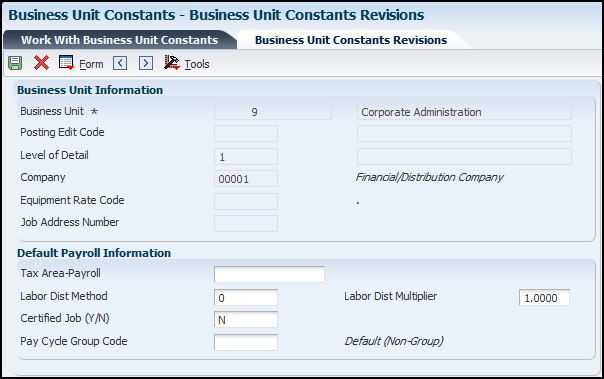

HCM Business Unit Constants builds on the setup done in General Accounting. This document explains the additional information that can be added and how it will expedite data entry.
Scope
This document is intended for EnterpriseOne users who are setting up the Human Resources and Payroll modules for use by their organization.
Details
Overview of HCM Business Unit Constants
You set up business unit constants to define default information that is associated with a business unit. Default business unit information expedites data entry for time entry and payroll information. Setting up business unit constants also allows you to:
Define taxing authorities for a business unit.
Apply flat burden rates to a specific business unit.
Set up the business unit to act as a certified job for governmental reporting purposes. Job information for the business unit is included in certified payroll reports.
You can associate a business unit with only one company. When you set up a business unit, the system adds that business unit to the Business Unit Master table (F0006) if the business unit does not already exist in that table. In many companies, business units are set up in the JD Edwards EnterpriseOne General Accounting system by the Accounting department. If the business unit already exists, the revision form allows some fields to be modified.
You must use the JD Edwards EnterpriseOne General Accounting system, and not the JD Edwards EnterpriseOne Payroll system, to revise the information in any of these fields:
Posting Edit - Business Unit
Level of Detail - Business Unit
Company
Equipment Rate Code
Address Number
Business Unit Constants Revisions
The Business Unit Constants Revisions form is accessed by selecting an existing business unit from the grid on the Business Unit Constants - Work With Business Unit Constants (P059051A) or by clicking add on the same form.

The following items are completed and/or modified in the HCM Foundations module.
Tax Area-Payroll - Enter a value that specifies a taxing authority. The system uses the value that you specify as the default value for all time entries for this Cost Center (business unit).
Note: If you use the GeoCoder, the system uses the address information for the business unit to determine the GeoCode for the Tax Area - Payroll field. The system automatically populates this field if only one GeoCode is available.
Labor Dist Method- Enter a value that controls whether the labor costs include a flat burden for payroll taxes and benefits. Values are:
0: The flat burden factor is always 1.0000, so the resulting amount for the flat burden is zero.
1: The flat burden factor is always greater than 1.0000, so the labor costs include a flat burden.
Labor Dist Multiplier - Enter a multiplier to load direct labor costs with burden. For example, a factor of 1.32 will load every dollar of labor cost with 32 cents worth of burden.
Certified Job (Y/N) - Enter a value that specifies whether to include information about this job in certified payroll reports used for governmental reporting. Values are:
Y: Include job information on certified payroll reports.
N: Do not include job information. This value is the default.
Pay Cycle Group Code - Enter a code from UDC table 06/PG that indicates a pay cycle group. If you enter a pay cycle group code here, the system processes only those timecards whose business unit has that pay cycle group assigned in the business unit constants.
Setting Up Auto Deposit Instructions for a Business Unit
From the Business Unit Constants - Work With Business Unit Constants, select the applicable business unit and select Auto Deposit from the Row Option menu form.
Account Information
Bank/Gateway Operator Transit Number - Enter the payment routing number for the employee's financial institution.
Bank Account Number - Enter the unique account number at the financial institution for the account to be used for this business unit.
Auto Deposit Company Identification - Enter a 10-character, alphanumeric code that identifies the originator of a file. This code must be included on all prenotification records and on each entry initiated pursuant to such prenotification. The company ID may begin with an ANSI one-digit Identification Code Designator (ICD), followed by the identification number. The ANSI identification numbers and related ICDs are:
IRS Employer Identification Number (EIN): 1
Data Universal Numbering Systems (DUNS): 3
User Assigned Number: 9
Company Name - Enter the immediate origin name for the ACHA file header record, typically the name of the company sending the deposits to the clearing house bank.
Immediate Destination for AutoDeposit - Enter a 10-character code that specifies the routing number of the ACH Operator or receiving point to which the pre-note file is being sent. This code consists of a blank in the first position, followed by the four digit Federal Reserve Routing Symbol, the four digit ABA Institution Identifier, and the Check Digit (bTTTTAAAAC).
Immediate Origin for AutoDeposit - Enter a 10-character code that specifies the routing number of the ACH Operator or sending point that is sending the pre-note file. This code consists of a blank in the first position, followed by the four-digit Federal Reserve Routing Symbol, the four-digit ABA Institution Identifier and the Check Digit (bTTTTAAAAC).
Miscellaneous
Batch Number - Enter the batch number assigned to the Auto Deposit included in the workfile build.
SCC (service class code)- Enter a code that identifies the general classification of dollar entries to be exchanged. This standard is used to facilitate transmission of data between organizations. Automated Clearing House (ACH) entries required for payroll deposits use these service class codes:
200: ACH entries mixed debit and credits
220: ACH credits only (batch format)
225: ACH debits only (batch format).
Use of class 200 is recommended.
Discretionary Data - Enter additional codes that are of significance to your company. This field enables specialized handling of all subsequent entries in the batch. The banking system does not use a standardized interpretation of the value you enter.
File ID Modifier - Enter a code in the file header record that the system uses to distinguish multiple files created on the same date and among the same participants. Values can include only upper case letters A through Z and numbers 0 through 9.
SEC- This code permits various kinds of paperless entries to be distinguished. The following entry classes have been defined:
SIA Single item authorization
PPD Pre-arranged payments and deposits
IAT International ACH Transaction
Header/Trailer Information
Header Record for Auto Deposits - Enter a code that identifies the first physical records on magnetic tape files. The header record identifies the data file and provides security and control information relative to that file.
Trailer Record for Auto Deposits - Enter a code that identifies the trailer record for auto deposit tape files. This code is used for magnetic tape files only. Trailer records are the last physical records for each file. The trailer record identifies the data file and tape volume and provides the checking mechanism for processing verification (that is, block counts).